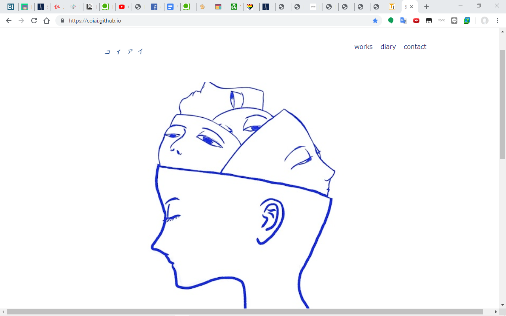

SUNABA KOZA 1日目
こんにちは、コイアイです。今日から sunaba koza 二期のスクール開始です。学んだことを整理するためにもnoteに投稿します。
細かい内容というより、キーワードをnoteしていく感じデス。
ほんとに酷いノートになってしまいまして、上げる
SUNABA KOZA 2日目 Web概要 2/2
こんにちは、コイアイです。
毎日が本当に幸せな日々を送っています、スクールたのしい！！
皆さん本当にありがとうございます。
さて、今日学んだことをnoteしていきます。
noteの欠点はインデントが作れないところですよね～（知らないだけで作れたりするのかな...??）
アウトライン化されたevernote のリンクを張るのでそちらの方が分かりやすいかもしれません。

SUNABA KOZA ３日目 環境構築
こんにちは、コイアイです。
今日もnoteしていきます。
よしなに。
環境構築
Visual Studio Code
VS code は何ができるか
Visual Studio Code 略して VS code とはテキストエディタの事です。
テキストエディタってなんじゃって？ググるのじゃ。（書き込みの放棄）